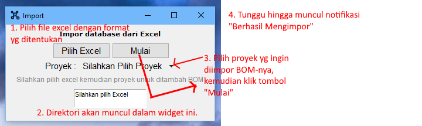

Cara Pengguanaan
Melihat dan mencari pada jendela utama
User dapat mencari proyek yang ada dengan cara seperti yang ditunjukkan pada gambar di bawah.
Untuk melihat lebih lanjut mengenai data BOM dari proyek yang ada, pilih proyek pada kolom kemudian klik tombol Lihat BOM. User juga dapat melihat Data Sheet yang terlampirkan pada proyek yang ada, jika proyek tersebut memiliki Data Sheet. Untuk menambahkan atau mengganti, user dapat menggunakan fitur pengeditan dengan cara mengeklik tombol Edit kemudian pilih menu Proyek Baru pada Menu Bar.
Mengimpor Data BOM dari Excel ke dalam Database Proyek
User dapat mengimpor data BOM ke dalam proyek yang ada dalam database. Untuk mengimpor, pastikan User telah memiliki atau telah menambahkan proyek. Untuk menambahkan proyek, User dapat mengeklik menu Edit kemudian pilih Proyek Baru pada jendela utama.
Jika sudah memiliki proyek, untuk mengimpor User dapat mengikuti instruksi di bawah. Pastikan Format Excel sudah benar dan memilih proyek yang akan diberikan BOM dari excel sebelum klik Mulai.
Mengekspor Data BOM menjadi Excel dari Proyek yang ada
User dapat mengekspor data yang ada dalam program database menjadi file Excel dengan mengikuti instruksi di bawah.
PYKonektor menerapkan Lisensi MIT dan dimaintanance di github oleh Alvians Maulana.
©2022